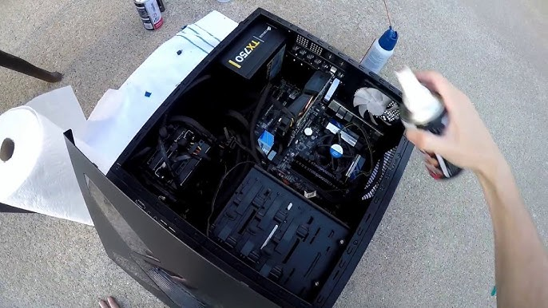
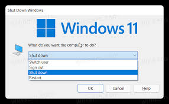

Hardware Maintenance Tips
Best practices for cleaning and maintaining your hardware to extend its lifespan.
-
1. Regular Physical Cleaning
Use compressed air to blow dust out of fans and heat sinks. This prevents overheating and noise issues.

-
2. Monitor Hardware Health
Check drive health and system temperatures periodically to catch failing components before they crash.

-
3. Run System File Scans
Perform software-based diagnostic scans to ensure the operating system is running efficiently.

-
4. Manage Thermal Paste
Replace CPU thermal paste every few years to maintain effective heat transfer and prevent thermal throttling.

-
5. Safe Power Shutdowns
Always use the proper shutdown procedure in Windows to protect your storage drives from data corruption.
